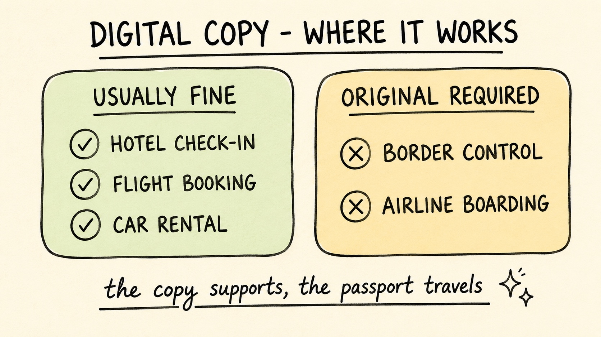

Digital Passport Copy: What Counts as Valid ID When Travelling?
Travel Document Vault

Key Takeaways
- Digital passport copies are accepted for hotel check-in, flight bookings, and car rental reservations, but not at borders or for airline boarding.
- The physical original passport is always required at border crossings, for airline boarding, and for police identity checks.
- Digital copies have no legal standing as travel documents. They are supporting documentation only.
- Visa applications require specific formats (certified copies or notarised scans) rather than casual phone photos. Check the embassy website first.
- If your passport is lost abroad, a digital copy speeds up emergency replacement at your embassy significantly.
When planning a trip, many travellers wonder whether they can store a digital copy of their passport on their phone instead of carrying the original. The short answer: a digital copy is genuinely useful, but only in specific situations. You need to know exactly where it works and where it doesn't, so you don't end up caught out at check-in.
Where Digital Passport Copies Are Accepted
Hotel Check-in
Most hotels worldwide accept digital passport copies for check-in - a PDF on your phone, emailed in advance, or printed. This is particularly useful if you're checking in late or moving between properties and don't want to carry your physical passport the whole trip. Some smaller hotels, particularly in regions with less digital infrastructure, still prefer the original. In parts of Europe - Spain, France and Italy among them - hotels must record your details for the authorities and will generally want to sight the physical passport to do it, even though data-protection guidance says they typically should not keep a copy. Contact your accommodation in advance to confirm.
Flight Bookings and Online Check-in
Airlines require your passport information when booking, and many allow you to upload a digital copy to verify your identity for online check-in - this speeds up the airport process. You'll still need to present the original passport at the gate. The digital copy's role is pre-travel verification, not boarding documentation.
Car Rental Agencies
Car rental companies typically accept digital passport copies for booking and deposit verification. When you arrive to collect the vehicle, you will present the original passport along with your driver's licence. The digital copy is useful during the reservation phase.
Emergency Consular Assistance
If your passport is lost or stolen while travelling, a digital copy can significantly speed up the emergency travel document process at your embassy. It proves the existence of your passport and provides your biographical information, photograph, and passport number, all of which the embassy needs to issue a replacement. This is one of the strongest reasons to always carry a digital backup.

Where Your Physical Passport Is Always Required
A digital copy is not a substitute for your physical passport at immigration, with airlines, or with law enforcement. In these scenarios, the original document is simply mandatory - there's no way around it.
| Travel Situation | Digital Copy Accepted | Notes |
|---|---|---|
| Border crossing (entry/exit) | No (original required) | Immigration officials must physically inspect the document |
| Airline boarding | No (original required) | Security and gate staff require the physical passport |
| Visa application | Sometimes (check embassy) | Most require certified copies or originals, not casual photos |
| Police identity checks | No (original required) | Law enforcement requires the original document |
| Hotel check-in | Usually yes | Confirm with the property in advance |
| Car rental booking | Usually yes | Original still required at vehicle pickup |
| Embassy emergency assistance | Yes (speeds up replacement) | Cannot replace the passport itself, but helps issue emergency document |
Visa Applications: The Rules Are Specific
The rules for visa applications are more flexible than borders, but still specific. Most countries accept either the original passport or certified photocopies, though requirements vary significantly by destination and embassy.
What this means in practice
You're applying for a French visa. The official website says "certified copy". This means a certified photocopy from a notary public or government office. Not a casual phone photo. Submitting the wrong format leads to rejection and re-application delays. Contact the embassy to confirm acceptable formats before spending time on the application.
Some embassies accept notarised digital scans submitted electronically, whilst others require physical certified copies or the original passport in person. Requirements vary so dramatically that you really need to check the official government website for the country you're applying to.
How to Store Digital Copies Securely
Passport copies contain sensitive identity information: your full name, date of birth, passport number, nationality, and photograph. A poorly stored digital copy creates the same identity theft risk as losing the physical document.
- Use an encrypted app designed for document storage, not regular cloud storage or email where files can be accessed if your account is compromised.
- Store multiple copies in different locations: on your phone, with a trusted family member at home, and in a secure backup.
- Never share unnecessarily. Only provide your passport copy to legitimate businesses with whom you are actively transacting.
- Keep copies separate from your physical passport. If your bag is stolen, you want the backup somewhere else.
Travel Document Vault stores encrypted copies of all your travel documents on-device. AES-256 encrypted on your phone, no account required. Optional encrypted backup to your own iCloud or Google Drive (Pro) sealed with a recovery code only you hold. Available on the App Store.
If you're wondering whether cloud storage is safe for passport copies, see our guide to storing passports in Google Photos. It explains why a dedicated encrypted app offers stronger protection.
Frequently Asked Questions
Is a digital copy of my passport accepted at hotel check-in?
Yes, most hotels worldwide accept digital passport copies for check-in: a PDF on your phone, by email, or printed. Some smaller establishments may still require a physical passport. Always contact your hotel in advance to confirm.
Can I use a digital passport copy at the airport for boarding?
No. Airlines require the original, physical passport for boarding. A digital copy is not accepted by security or gate staff. You must carry your original passport to the airport for any international flight.
Are digital passport copies valid for visa applications?
Most visa applications require certified photocopies or notarised scans. Not casual phone photos. Requirements vary by country and embassy. Check the official government website for the country where you are applying before submitting anything.
Can a digital passport copy help if my passport is lost or stolen abroad?
Yes, significantly. A digital copy speeds up the emergency travel document process at your embassy. It provides your biographical information, photograph, and passport number, all of which the embassy needs to issue a replacement document.
How should I store my digital passport copy securely?
Use an encrypted app designed for document storage rather than regular cloud storage or email. Store copies in multiple locations: on your phone and with a trusted person at home. Never share your passport copy unnecessarily, as it contains sensitive identity information.